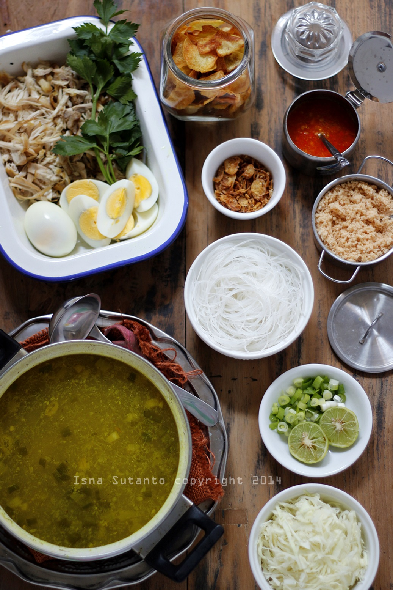

SOTO LAMONGAN
 Soto Lamongan adalah sajian makanan soto ayam yang khas dari Lamongan, Jawa Timur. Soto yang satu ini sangat khas dan berbeda dengan soto lainnya, baik dari segi penyajian maupun rasanya.
Soto Lamongan ini sedikit berbeda dengan soto lainnya. Salah satu ciri khas dari Soto Lamongan ini terletak pada serbuk krupuk udangnya yang sering disebut Poya. Apabila serbuk Poya tersebut di campurkan dengan kuahnya maka akan menghasilkan rasa gurih yang khas pada Soto Lamongan ini.
Soto Lamongan adalah sajian makanan soto ayam yang khas dari Lamongan, Jawa Timur. Soto yang satu ini sangat khas dan berbeda dengan soto lainnya, baik dari segi penyajian maupun rasanya.
Soto Lamongan ini sedikit berbeda dengan soto lainnya. Salah satu ciri khas dari Soto Lamongan ini terletak pada serbuk krupuk udangnya yang sering disebut Poya. Apabila serbuk Poya tersebut di campurkan dengan kuahnya maka akan menghasilkan rasa gurih yang khas pada Soto Lamongan ini.
# BAHAN -BAHAN

Bahan-bahan:
- 1 ekor ayam kampung segar ukuran sedang
- 3 batang serai yang dimemarkan
- 5 lembar daun salam
- 3 batang daun bawang segar. Cuci bersih kemudian potong sepanjang kurang lebih 1 sampai 1,5 cm
- 1 ruas jari orang dewasa lengkuas yang dimemarkan
- 5 lembar daun jeruk
- 1 sdm gula pasir
- 2 1/2 sdm garam
- 3,5 liter air bersih secukupnya
- Minyak secukupnya untuk menumis bumbu halus
3 dari 7 halaman
Bumbu Halus:
- 10 siung bawang putih ukuran biasa
- 5-8 siung bawang merah
- 4 butir kemiri
- 3 ruas jari orang dewasa kunyit yang sudah dibakar
- 1 sdt ketumbar
- 2 ruas jari orang dewasa jahe
- 1 sdt merica
4 dari 7 halaman
Bahan Pelengkap Soto
- 6 pcs telur ayam rebus yang sudah dibelah
- 150-200 gram soun yang sudah direndam dengan air panas
- Daun seledri segar yang sudah dirajang secukupnya sesuai selera.
- 250 gram kecambah yang sudah direbus
- Kol yang sudah dirajang secukupnya sesuai selera.
- Jeruk segar untuk diperas airnya nanti secukupnya sesuai selera.
- Bawang merah goreng secukupnya.